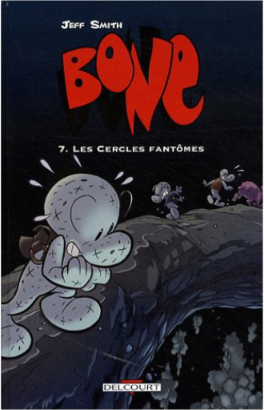

Books
Movies
Albums
Videogames
Games
BD
BD Camille
Blu-ray
Business
Camille
Comics
Cooking
Lego
Manga
Pauline
Photography
Star Wars
Travel
TV Shows
Un livre dont vous êtes le héro
Vinyl
Walt Disney
65
66
67
68
69
l'éveil d'endymion, tome 1
dan simmons
5
l'éveil d'endymion, tome 2
dan simmons
4
la chute d'hypérion, tome 1
dan simmons
5
la chute d'hypérion, tome 2
dan simmons
5
chanson douce
leila slimani
bone, tome 1 : la forêt sans retour
jeff smith
4.5
bone, tome 2 : la grande course
jeff smith
5
bone, tome 3 : rêves et cauchemars
jeff smith
4.5
bone, tome 4 : le pourfendeur de dragons
jeff smith
5
bone, tome 5 : le seigneur des marches de l'est
jeff smith
5
bone, tome 6 : la caverne du vieil homme
jeff smith

bone, tome 7 : les cercles fantômes
jeff smith
3.5
65
66
67
68
69


 Made with Delicious Library Made with Delicious Library
Made with Delicious Library Made with Delicious Library